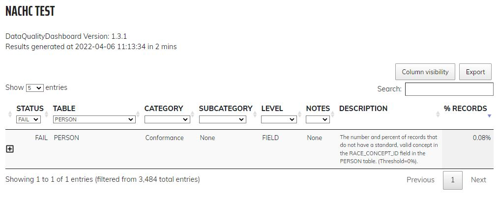

This document details the design and decisions for implementing mapping of FHIR Patient resource to the OMOP PERSON Table.
The following references were used to inform this implementation.
| General Mapping Resources | This is the fhir-to-omop documentation for general FHIR and OMOP information. |
| FHIR Patient (STU3) | FHIR Documentation for the Patient resource. The following version have been considered. |
| PERSON | This is the OMOP documentation for the PERSON table. |
Mapping of FHIR Patient resources to OMOP PATIENT records is relatively straight forward. Mapping is done in the OmopPersonBuilder class. The OmopPersonBuilder constructs PERSON Data Value Objects (DVOs) using the PatientParser class to parse FHIR Patient resources
On April 08 we updated our tests to the latest version of DQD. This resulted in a number of the new tests failing. Failures are shown below. Code has been updated to correct for these failures. All tests except for the standard, valid race_concept_id shown below are passing. The race_concept_id test is passing as the source data have records with a non-standard race code: Concept ID 8522 "Other Race".
The mapping of FHIR Patient resources to OMOP PERSON records is passing for all Data Quality Dashboard (DQD) tests with the exception of the test for Race conformity. Race conformity is failing as the FHIR data we are using for testing has Patients that have "Other" specified as Race. "Other" is a concept in the OHDSI Race domain but is not a standard concept. There currently is no standard concept for "Other" race in OMOP.
